Help and Support
There are three windows for looking up a term in LemmaLoom, contacting the developer, and citing LemmaLoom. Two of them can be found in the Help menu and one in the LemmaLoom menu:
| Command | What it opens |
|---|---|
| Help ▸ Glossary | Short definitions of the terms and labels in LemmaLoom, with a search field |
| Help ▸ Send Feedback | A window for a bug report, feature request, or question, which becomes an email in your mail program |
| LemmaLoom ▸ About LemmaLoom | The version and build numbers, citations in MLA and APA style, and the licenses of the components LemmaLoom contains |
All three commands open an individual window next to the main window. When the window is already opened, selecting the command again activates the existing window.
All examples assume the use of the “Climate Debate” project discussed in The example project of Chapter 1, Introduction; to practice the commands yourself, import it via File ▸ Import ▸ Example Project.
The Help menu
macOS adds a search field at the very top of the Help menu that searches the names of LemmaLoom’s commands in the menus. If you were to search something like activity, then Activity would appear among the suggestions in the search result. Hovering the mouse pointer over it opens the Window menu, pointing to where that command exists. ⌘? (⇧⌘/ on US keyboards) brings up this search field in the Help menu.
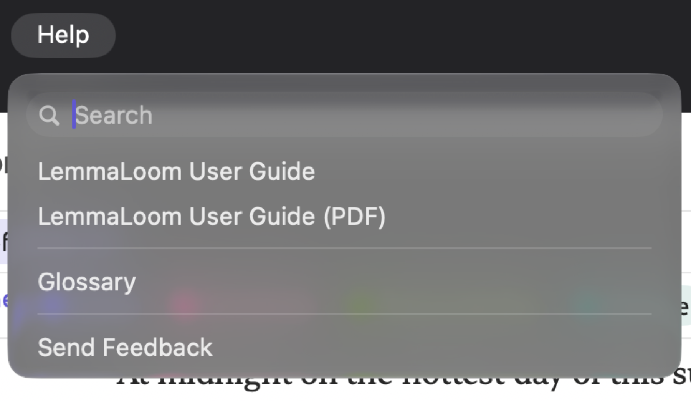
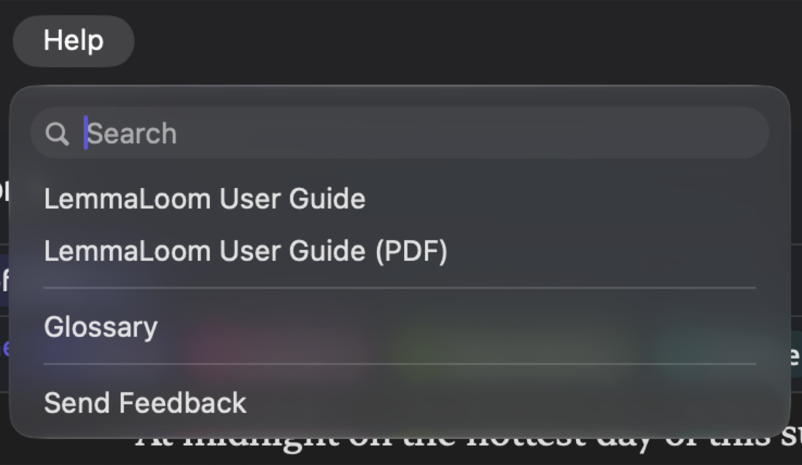
The Glossary
The Glossary defines the vocabulary used in qualitative analysis, such as code, segment, and memo, as well as labels employed in grammar analysis. NNS is an example of a label that marks plural nouns, while nsubj marks the noun that acts as the subject of a clause. It also covers explanations for the statistics shown in the inspector and abbreviations in the status bar and diagrams. The Glossary can always be kept open alongside your project.
Every entry in the Glossary provides just a brief explanation of what the label denotes.
The Glossary is the same for all projects and is always in the interface language. With a German interface, it contains names and definitions in German, and its alphabetically ordered categories will be sorted according to German rules (refer to The interface language in Chapter 24, Settings and Appearance). Short forms such as NNS and nsubj remain constant regardless of the interface language since they correspond to actual grammar labels used in grammar analysis.
The Glossary window
Within the sidebar of the Glossary window, you’ll find an item labeled All, followed by twelve other items, which denote the different categories within the Glossary. Each category lists how many terms it contains. On the right, above the entries, is a Search field.
Finding an entry
- Choose Help ▸ Glossary.
- In the sidebar, click All to look through every category, or click one category to look only there.
- Type a word or a label, such as
nsubj, in the Search field.
The list narrows as you type. Searching will match any entry name, short form, or definition containing your query. Capital letters are ignored in the search but accents are not, so to find Cramér’s V without typing the é, search for cram.
Selecting All organizes entries by their categories, displaying the current category name at the top of the list while scrolling. Categories without matching results are omitted. Having no matches at all displays No matches. Counts shown in the sidebar do not reflect the search.
As the definitions of entries are included in the search, shorter queries can match unexpected results. Selecting All and performing a search with the query subject returns many results. These results come from most categories. Among them are the function Subject, dependency relations of subjects, the phrase label for a clause (defined as a subject plus its predicate), the grammatical feature Case, and the letter S used in sentence patterns. Choosing another category via clicking narrows the list but keeps the previous query active. Selecting Dependency relations and searching for the same query reduces search results to six. Four of these results are marked with EN ZH (csubj, csubjpass, nsubj, and nsubjpass) while two results are marked with DE (sb and sbp).
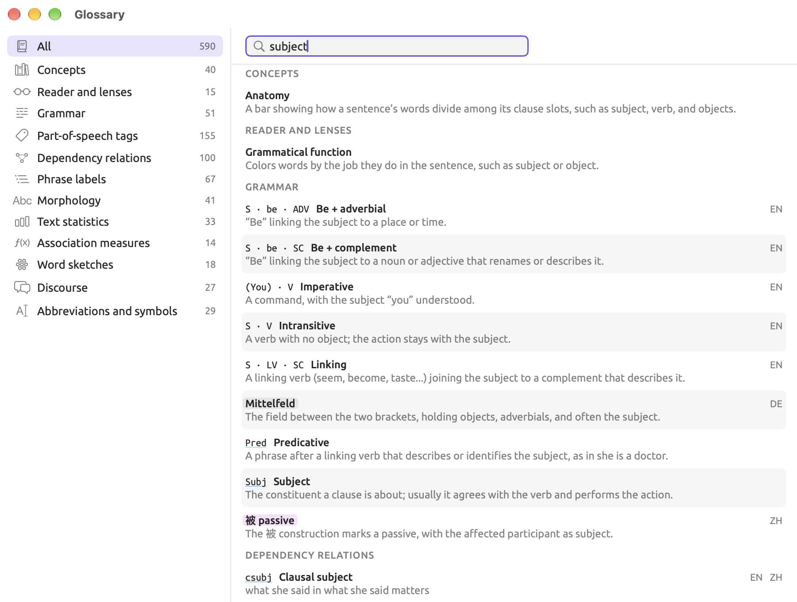
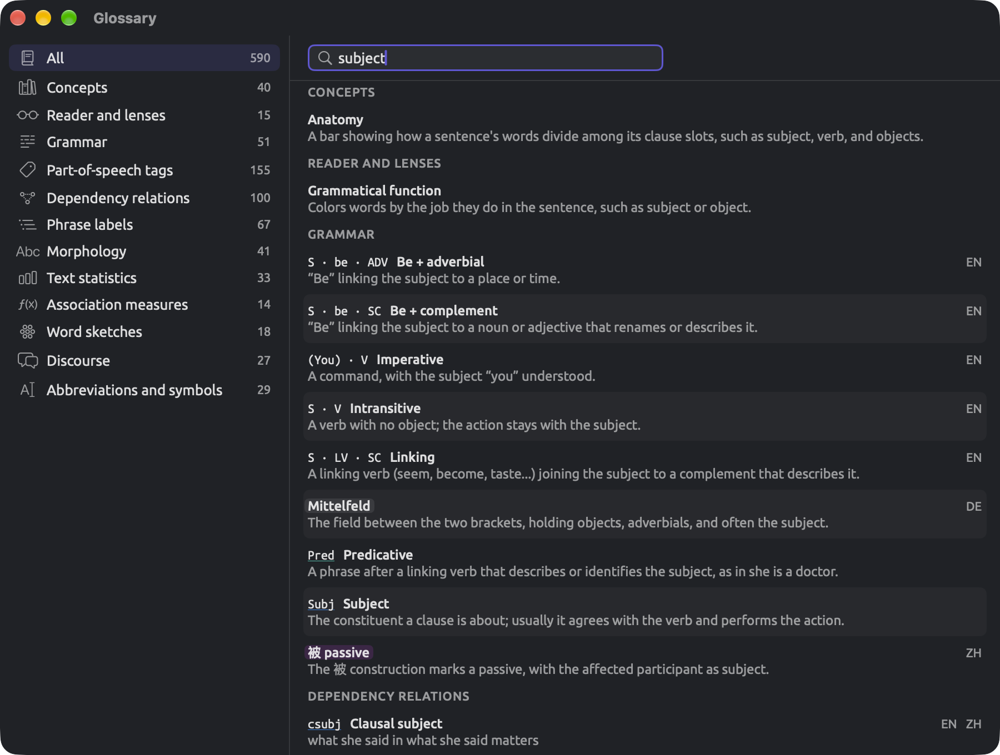
Reading an entry
An entry is structured into up to four parts:
- The short form of the entry, in fixed-width font, e.g.,
nsubj,MDD, or¶. - The name of the entry, in boldface, e.g., Nominal subject.
- To the right of both the short form and the name is a list of abbreviations indicating in which languages the current entry applies. The abbreviations are EN for English, DE for German, and ZH for Chinese; if there isn’t a particular language indicated, that means it is applicable to all three languages.
- Lastly, the definition follows the name in plain text. Definitions tend to be examples for tags and relations. The definition for
nsubj, for instance, reads she in she runs, meaning that the nominal subject she appears in the clause she runs.
Under Morphology, each grammatical feature’s value provides the exact string returned as part of grammar analysis, e.g., Number=Plur, and then the grammatical term describing it, Plural. The grammatical feature itself, Number, has its own entry, with a definition, above the values.
There are special entries that denote something that the lenses provided in LemmaLoom automatically annotate. Such an entry shows its short form, or its name when it has no short form, in that lens’s color and style so that you can link that color directly with a concept you might see highlighted within text in the reader. Hover the mouse pointer over the colored word to reveal the name of that particular lens. If you customize the color or style of a lens aspect within the Lenses pane of Settings, then the coloring changes to reflect that customization (see The Lenses pane in Chapter 24, Settings and Appearance).
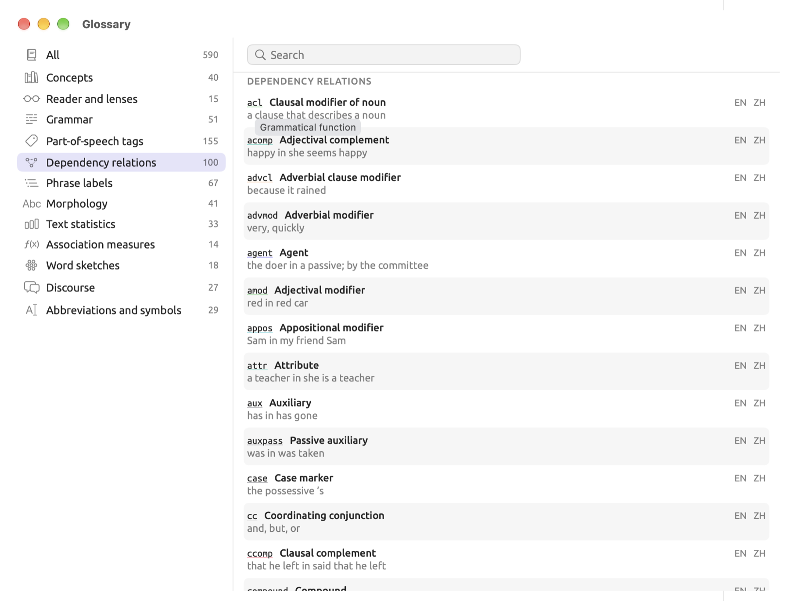
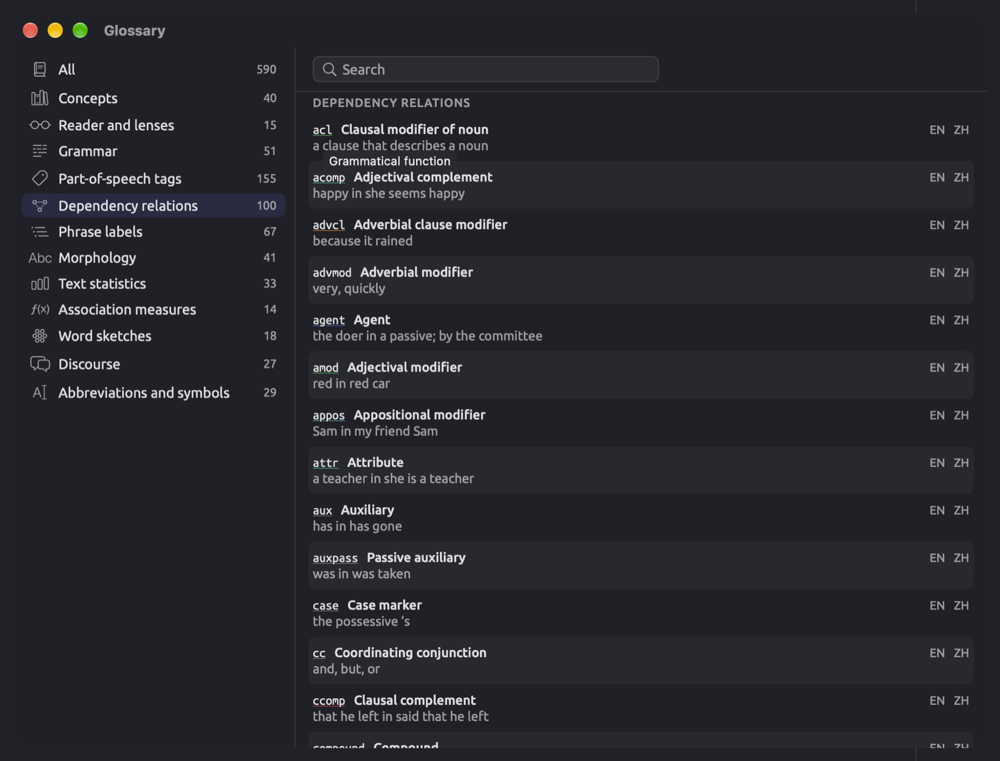
Short forms, names, and definitions are selectable individually and copiable via ⌘C.
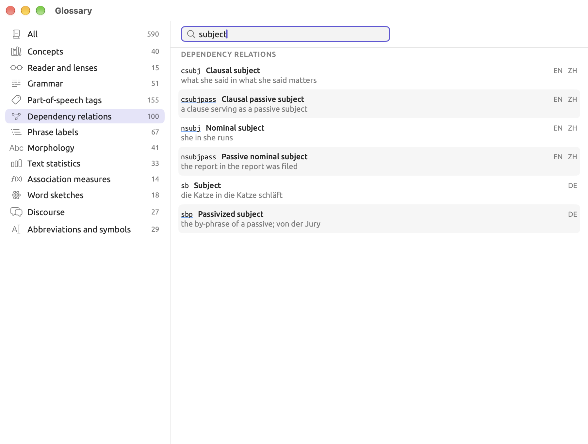
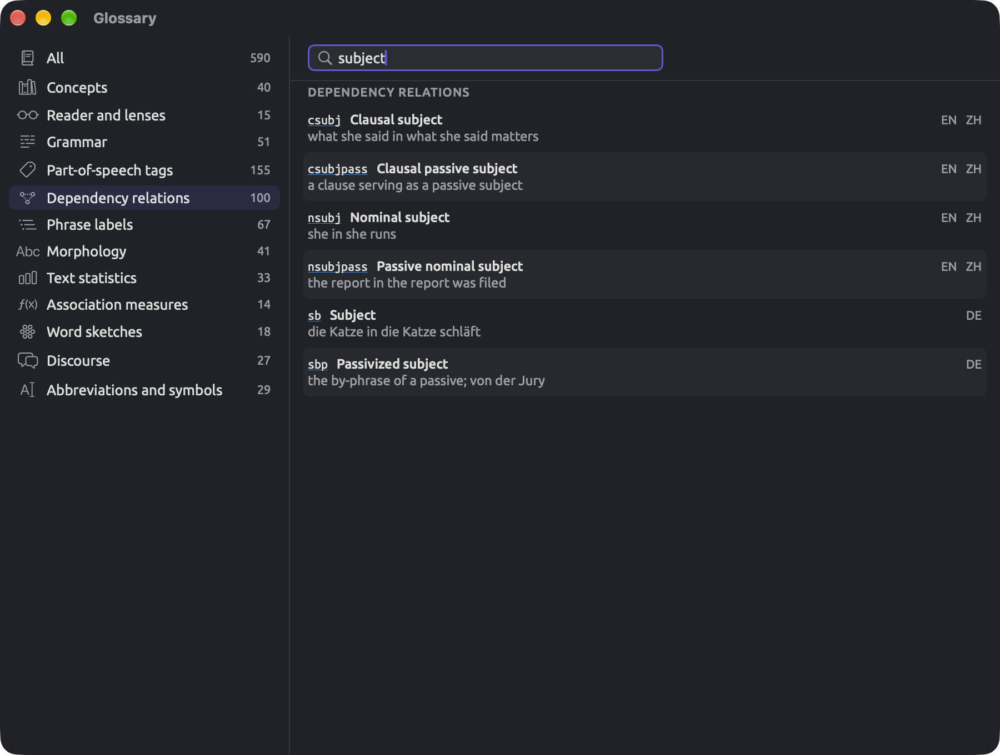
Sending feedback
Help ▸ Send Feedback launches the window where you compose either a bug report, feature request, or question for the developer. Compose Email takes the content you composed and turns it into an email addressed to info@lemmaloom.app in your mail program.
Writing a message
- Choose Help ▸ Send Feedback.
- At the top of the window, click the kind of message (Bug report, Feature request, Question, or Other). The window opens with Bug report chosen.
- Type your message in the box under Message. Reporting a problem usefully suggests what to include.
- Leave Include system information selected to add the details shown on the line below it, or deselect it to leave them out.
- Click Compose Email.
- In your mail program, attach any screenshots and send the email.
The window closes when either the Compose Email or Cancel button is clicked; upon opening again, it is blank. When unsure whether your mail program’s setup works properly, copy a lengthy message (⌘A, then ⌘C) prior to pressing the Compose Email button.
When the message is empty or contains only blanks, the Compose Email button gets disabled and displays the tooltip Message is empty.
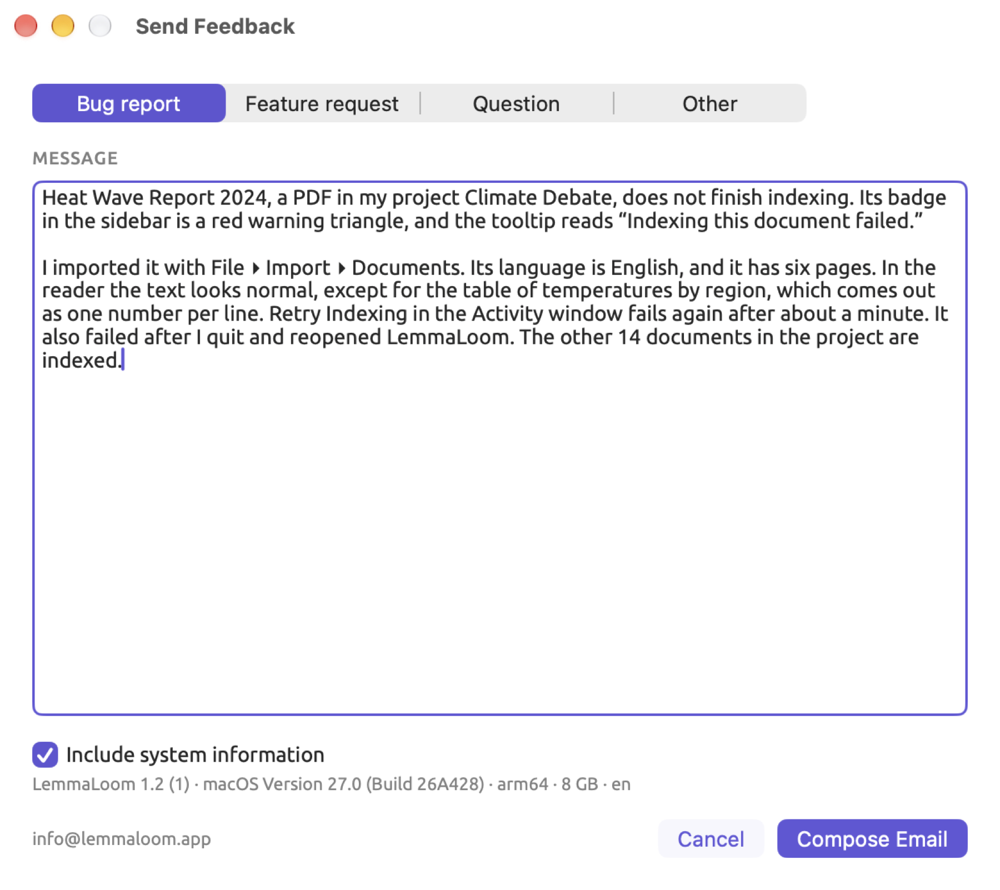
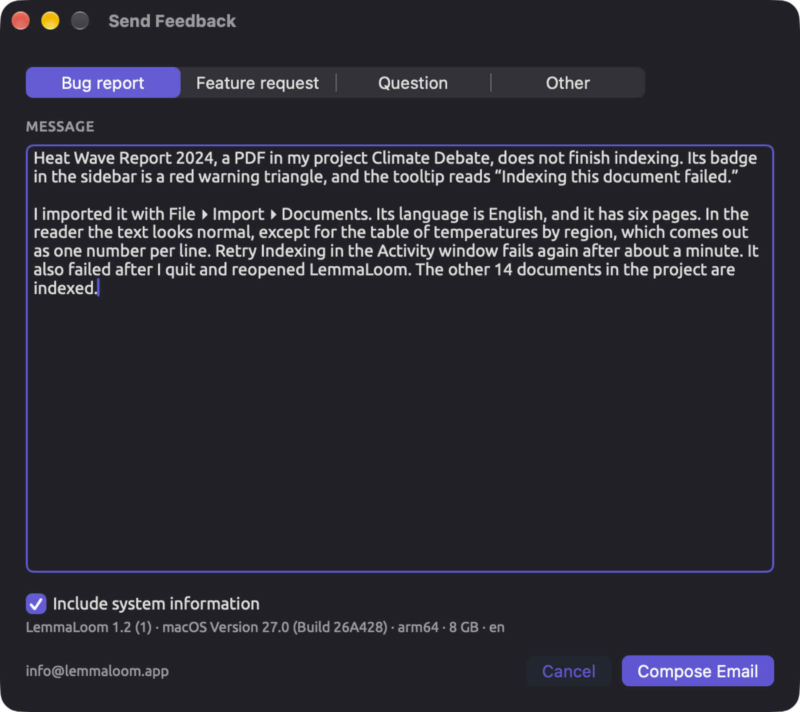
What the email contains
The subject line indicates what sort of email this is.
| Kind of message | Subject of the email |
|---|---|
| Bug report | LemmaLoom · Bug report |
| Feature request | LemmaLoom · Feature request |
| Question | LemmaLoom · Question |
| Other | LemmaLoom · Feedback |
Selecting Include system information adds a separator line (--) and four lines below your message:
| Line | Example | Meaning |
|---|---|---|
| 1 | LemmaLoom 1.2 (1) | The version of LemmaLoom, with the build number in parentheses |
| 2 | macOS Version 27.0 (Build 27A200) | The version of macOS |
| 3 | arm64 · 8 GB | The processor type (arm64 for Apple silicon, x86_64 for Intel) and the memory installed in the Mac |
| 4 | en | The interface language (en, de, or zh-Hans) |
The window shows the identical information, except everything appears on a single line separated by dots. If you deselect the checkbox, the line fades.
LemmaLoom adds only the separator and these lines, and each can be deleted from the draft prior to sending it.
If the mail program does not open
Compose Email opens a new message in the default email application on your computer. The default email application is selected in Mail, under Mail ▸ Settings…, General, in the Default email reader menu. If Mail is your default email application and has no account yet, it asks you to add one.
If you are using a webmail service to compose emails, then copy the body of your feedback from the Send Feedback window (⌘A, then ⌘C), open a new blank email through your webmail provider, and paste your feedback into the new email. Then send your message to info@lemmaloom.app, which you may also copy from the bottom left corner of the window. Type the line of system information into the email as the window shows it.
Reporting a problem usefully
A very helpful bug report contains the detailed steps that led to the problem.
Before you write
Often, a quick test will solve your issue or point you in the right direction:
- Hover the mouse pointer over a disabled button. If the button is part of LemmaLoom’s windows or dialogs, its tooltip explains why the button is currently disabled (see Conventions in Chapter 1, Introduction). This is typically because the command needs to wait for something to complete first, like indexing the document, before proceeding.
- If a document fails indexing, a red warning triangle will appear next to the document name in the navigation sidebar. Hovering the mouse pointer over the warning triangle reveals the problem, after which you may right-click on the document and select Retry Indexing (see When indexing fails in Chapter 21, Analysis and Indexing).
- Quit LemmaLoom completely, reopen it, and try performing the action once more.
- Perform the exact actions on a different document or a fresh project with only one small document. Should the problem be isolated to this particular document alone, say so in your report.
- Check Updates in the App Store to ensure you are using the most recent release of LemmaLoom.
What to put in a report
- Firstly, describe in one sentence what you had hoped to achieve.
- Then outline, one per line, the actions you took step-by-step that resulted in the issue occurring. Name the menus, buttons, and fields according to what LemmaLoom calls them.
- Outline your expectations versus what happened.
- Please provide any error messages verbatim, copied if possible; else retype them.
- Indicate whether the issue happens all the time, occasionally, or happened only once.
- In addition, specify the kind of document (text file, PDF, web page, or recording), its language and approximate length, along with the number of documents contained in your project.
- Please also include the system information, which Include system information adds automatically.
To capture a screenshot of an entire window, you can use ⇧⌘4 and press Space, then click the window, after which the image is automatically saved to the Desktop folder. Alternatively, ⇧⌘5 brings up other screenshot options. You can attach the screenshot in your email client once the email is open.
An example report
Suppose that the PDF “Heat Wave Report 2024” from the project “Climate Debate” has failed to complete its indexing process. Here is how a useful bug report would read:
“Heat Wave Report 2024”, a PDF document in my project, doesn’t complete indexing. The badge on it in the sidebar shows a red warning triangle, while its tooltip displays “Indexing this document failed.”
I brought it in with File ▸ Import ▸ Documents. The language is English, and there are six pages. In the reader, everything seems fine except that the table displaying regional temperature readings shows up as individual numbers separated by new lines. Retry Indexing in the Activity window failed once more, after roughly a minute. The result did not change upon quitting and restarting LemmaLoom. All of the remaining 14 documents have successfully completed their indexing process.
I expected the report to be indexed like the rest of the documents within my project. An image depicting this table inside the reader is attached.
Below the message, four lines show your machine’s system information.
While reports stating merely Indexing doesn’t work may warrant multiple inquiries prior to any actual work being done, this example includes details on what was already tested and that the rest of the documents have finished indexing successfully. This allows the developer to determine that the issue occurs solely during indexing of this specific PDF document.
If LemmaLoom quits unexpectedly
macOS provides a crash reporter window whenever the software crashes unexpectedly. The window provides a Report… button next to a description of the problem encountered. Any report generated using this button goes to Apple and is forwarded to the developer only if you enabled the option Share with app developers in System Settings ▸ Privacy & Security ▸ Analytics & Improvements.
Alternatively, you may send the report yourself:
- Click Report… in the message.
- Select the text of the report and copy it (⌘C).
- Open LemmaLoom again and choose Help ▸ Send Feedback.
- Paste the report into the message box.
- Above the report, add a few lines on what you were doing just before LemmaLoom quit. A crash report shows where in the program the crash happened; your lines add which document or command you were using.
If LemmaLoom crashes as soon as it launches again, copy the report and submit it via email to info@lemmaloom.app. If you wish to attach previous crash reports from LemmaLoom, open the Console application (inside Utilities in the Applications folder) and locate Crash Reports.
Feature requests and questions
When making a feature request, talk about your research need rather than the control you have in mind. Provide information on what materials you work with, what needs to be found, counted, or compared in the material, and what will be done with the result obtained. Should your request rely on a certain technique mentioned in the literature, provide a citation for it. In the world of software engineering, we call this a User Story, a narrative from the perspective of the user detailing what they want to do. A developer can then digest the User Story into technical requirements and a development plan, meaning you need not worry about any technical specifics.
About LemmaLoom
To access information regarding LemmaLoom’s version number, citation text, and the licenses of its components, choose LemmaLoom ▸ About LemmaLoom. The window starts with the name LemmaLoom followed by its version (e.g., Version 1.2 (1)). The version number is displayed first, and this matches what is displayed on the App Store. After that, the build number comes in parentheses.
Next come the developer information, copyrights, and a line of special thanks. Next is Tip the Developer; clicking this link opens a window where you can leave a tip through the App Store. Then comes Cite LemmaLoom with citations according to two citation styles available. Licenses gives a complete list of the components used in LemmaLoom along with their licenses.
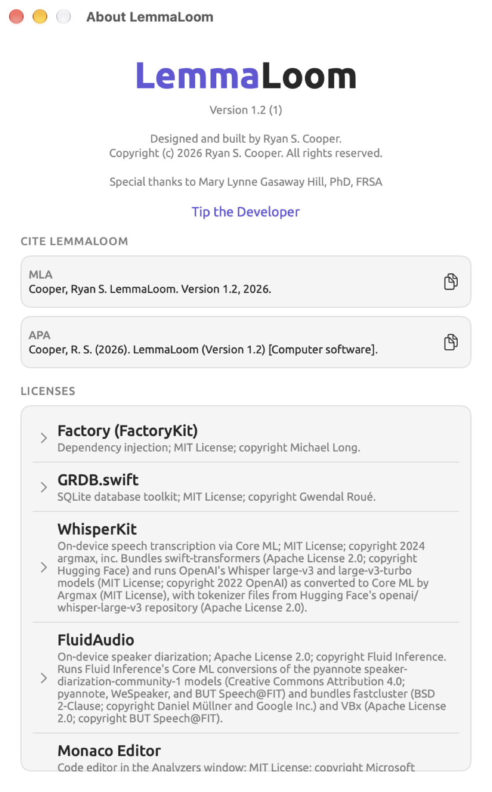
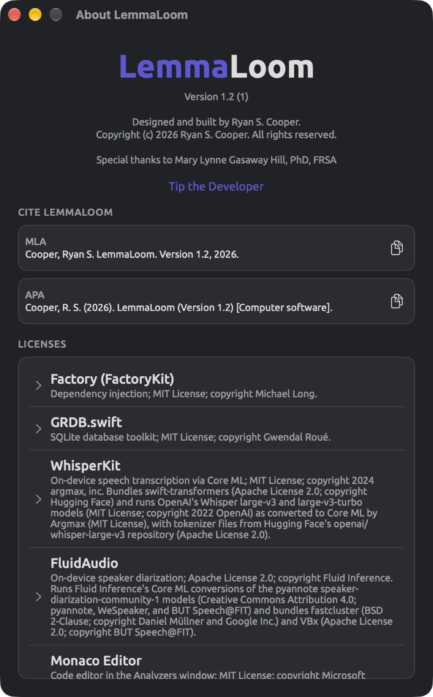
Citing LemmaLoom
Cite LemmaLoom generates citations for you in two styles.
| Style | What the citation contains |
|---|---|
| MLA | The developer’s name, surname first; the title, LemmaLoom; the version; the year |
| APA | The developer’s surname and initials; the year in parentheses; the title, with the version in parentheses; and the description [Computer software] |
To copy citations, click the buttons next to them, which look like two overlapping sheets. Alternatively, you could select a citation itself and use ⌘C to copy the selected text. When copying, these buttons flash momentarily with checkmarks.
Your citation uses the current year according to your Mac’s clock. Regardless of what interface language you choose, citations always use English text.
Licenses
Licenses lists the libraries, models, language data, and font that LemmaLoom includes. Every entry includes a name and description identifying the license agreement and the copyright owner in most cases. The names, descriptions, and text of the licenses are always provided in English regardless of your interface language. Clicking an entry shows you the complete text of the license(s); click again to hide the text. It’s possible to select and copy the text of licenses.
Entries with (data) at the end mean that only data from that project was used, not code, whether that’s trained models or tables containing word forms.
The entries also list transcription models, speaker diarization models, and grammar analysis models along with the authors thereof.
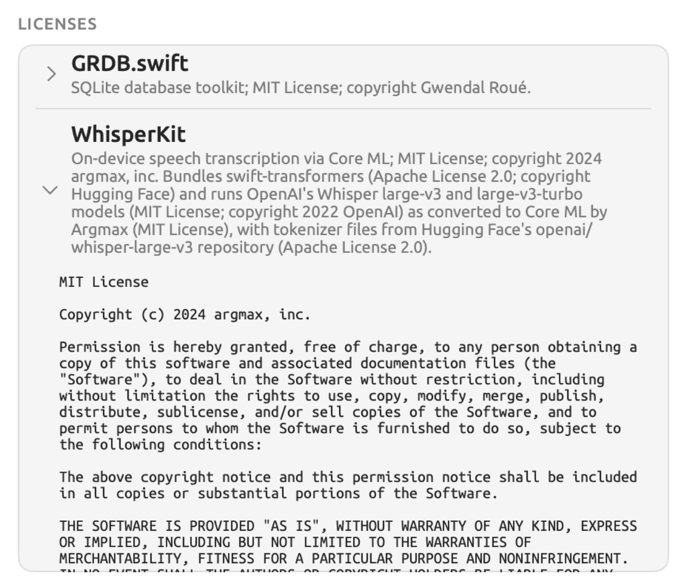
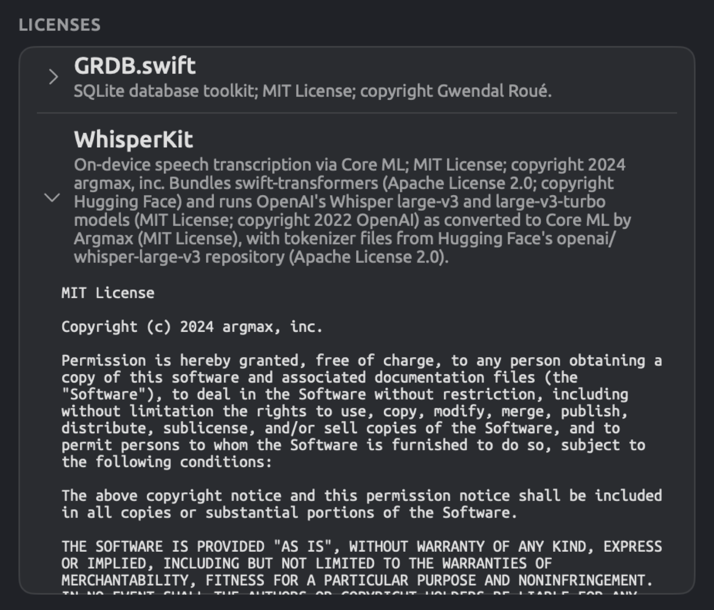